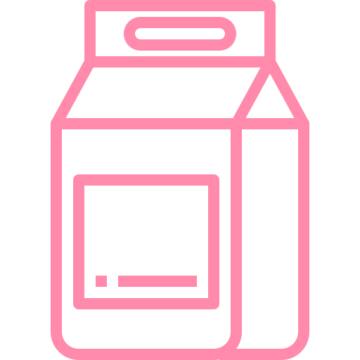
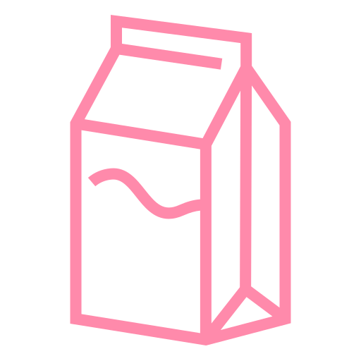
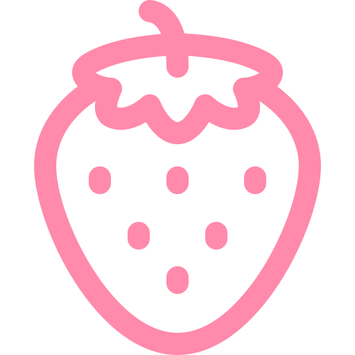

Um bolo de leite ninho com morango é uma delícia que une o sabor suave e cremoso do leite ninho com a frescura e leve acidez dos morangos frescos. Esse bolo tem uma massa fofa e delicada, recheada com um creme de leite ninho aveludado, que derrete na boca, e pedaços de morangos suculentos, que acrescentam uma textura e sabor refrescante. Coberto com mais creme de leite ninho, ele é decorado com morangos inteiros e ralado de leite ninho por cima, criando uma apresentação charmosa e irresistível. Cada pedaço é uma combinação perfeita de doçura e leveza, ideal para qualquer ocasião especial ou para dar aquele toque doce no dia a dia.
-  1 xícara de chá de farinha de trigo
- 3 ovos
- 1 xícara de açúcar
-  1/2 xícara de leite
- 1/3 xícara de óleo
- 1 colher de sopa de fermento químico
- 1/2 caixa de leite condensado
- 1/2 caixa de creme de leite
- 2 colheres de sopa de amido de milho
- 1 xícara de leite
-  1 caixa de morangos
- 1 xícara de chá de leite em pó
- 1 caixa de chantilly
- 3 colheres de sopa de leite condensado
- 3 colheres de sopa de leite em pó
- Morangos a gosto
Ingredientes
Massa
Recheio
Cobertura
Modo de Preparo
- Para a massa, em uma batedeira, coloque os ovos, o açúcar, o leite e bata bem.
- Adicione o óleo e bata novamente.
- Depois, acrescente a farinha e bata até ficar homogêneo.
- Por fim, junte o fermento e misture delicadamente.
- Transfira a massa para uma forma untada e leve para assar em forno preaquecido a 180 °C por 40 minutos.
- Para o recheio, em uma panela, coloque o leite condensado, o creme de leite, o amido de milho, o leite Ninho e misture bem.
- Adicione o leite e misture novamente.
- Leve a mistura para cozinhar em fogo médio e cozinhe até formar um creme consistente e homogêneo.
- Para a cobertura, em uma batedeira, coloque o chantilly gelado, o creme de leite, o leite Ninho e bata até dar o ponto de chantilly.
- Assim que a massa estiver fria, corte o bolo ao meio e molhe com um pouco de leite.
- Espalhe o recheio por cima, adicione os morangos picados e tampe com o restante da massa.
- Molhe com mais leite e finalize com chantilly e morangos inteiros.
"Esse bolo ficou incrível! A textura estava perfeita e o sabor maravilhoso!"
- Maria Lou
"Fiz para um evento e todos adoraram! Vou fazer novamente com certeza."
- Alex Santos
"Receita fácil de seguir e o bolo fica delicioso. Aprovado!"
- Gabi Sousa
Adicione seu comentário